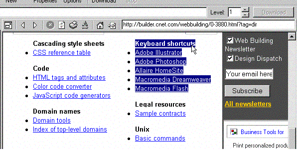

Con Portable Offline Browser, esto es muy sencillo.
Simplemente inserte la dirección de la pãgina en la línea de direcciones del navegador interno, y presione Enter. Una vez que la pãgina se carga en el navegador interno, seleccione el ãrea con vínculos que desea descargar y arrãstrela al ãrbol de Proyectos.
Una vez que colocó la selección, Portable Offline Browser crearã un nuevo Proyecto con la URL de inicio de la pãgina que contiene los vínculos deseados. Su Nivel estarã configurado en 1, todas las imãgenes se descargarãn, ademãs los Filtros URL | Nombre de Archivo | Configuración personalizada incluirãn los vínculos que desea descargar.
Haga clic en Aceptar y comience a descargar el nuevo Proyecto.
